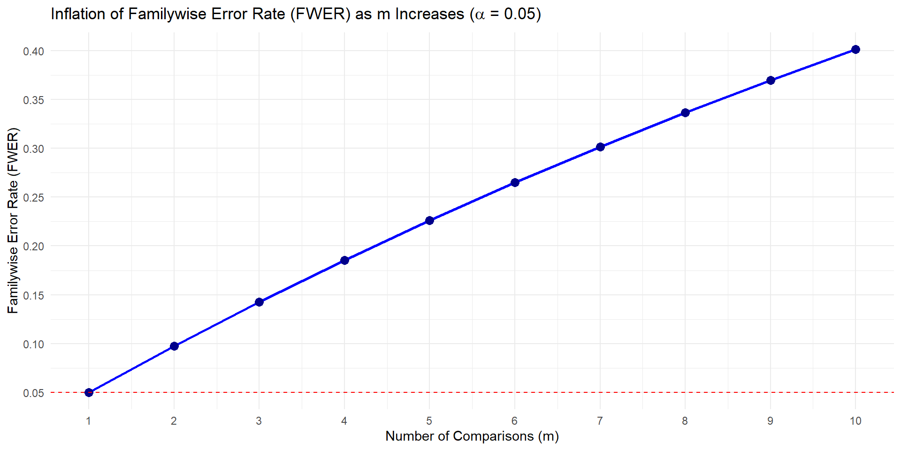
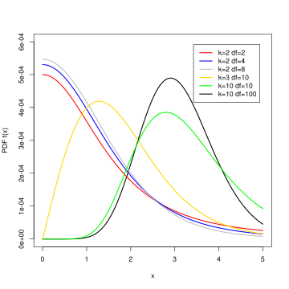

# A tibble: 3 × 3
group count mean
<fct> <int> <dbl>
1 ctrl 10 5.03
2 trt1 10 4.66
3 trt2 10 5.53Part III
2026-10-22
– No homework-3 until after exam-2
– Don’t forget about the Statistics Experience (12-1)
– Exam-2 is on 10-29
> Cumulative with emphasis on unit-2
> Closed notes, bring a calculator you know how to use
– Vote on the review quiz via Moodle if you would like!
– Question 2a regraded on all exams
Last time:
Results from an experiment to compare yields as measured by dried weight of plants) obtained under a control and two different treatment conditions. We are interested in seeing if the dried weight of plants is different across the three yields.
Results from an experiment to compare yields (as measured by dried weight of plants) obtained under a control and two different treatment conditions.
# A tibble: 3 × 3
group count mean
<fct> <int> <dbl>
1 ctrl 10 5.03
2 trt1 10 4.66
3 trt2 10 5.53\(Ho:\)
\(Ha:\)
First, build your own definition to each of the following terms. Use the next slide for a hint:
– Degrees of freedom:
– Sums of squares error (residuals):
– Sums of squares treatment (group):
– Mean square error (residuals):
– Mean square treatment (group):
– F-value:
– p-value:
\(F = \frac{\text{MS}_{\text{Between}}}{\text{MS}_{\text{Within}}}\)
\(\mathbf{F} = \frac{\frac{\text{SS}_{\text{Between}}}{k - 1}}{\frac{\text{SS}_{\text{Within}}}{N - k}}\)
\(\text{SS}_{\text{Between}} = \sum_{i=1}^{k} n_i (\bar{X}_i - \bar{X}_{\text{grand}})^2\)
We multiply by \(n_i\) in the between-groups sum of squares because each group mean represents (n_i) observations, and we need to account for all of them.
\(\text{SS}_{\text{Within}} = \sum_{i=1}^{k} \sum_{j=1}^{n_i} (X_{ij} - \bar{X}_i)^2\)
ith - group
jth - observation
Degrees of freedom: The number of independent pieces of information available to estimate variability (within and between).
Sum of squares error (residuals): The sum of the squared differences between observed responses and the values predicted by the model.
Sum of squares treatment (group): The sum of the squared differences between each group mean and the overall mean, weighted by the number of observations in each group. It measures variability explained by differences between groups.
Mean square error (residuals): The sum of squares error divided by its degrees of freedom. It estimates the common variance of the errors.
Mean square treatment (group): The sum of squares treatment divided by its degrees of freedom. It measures the variation among group means, accounting for the number of groups and observations.
F-value: The ratio of the mean square treatment to the mean square error. It compares the variation between groups to the variation within groups.
Note: We use MSE to account for how much information was used to calculate the sums of squares
Next fill in the partial ANOVA table below in the context of the plant dataset.
| Df | Sum Sq | Mean Sq | F value | Pr(>F) | |
|---|---|---|---|---|---|
| group | . | . | 1.8832 | . | 0.0159 |
| Residuals | . | 10.492 | . |
Df Sum Sq Mean Sq F value Pr(>F)
group 2 3.766 1.8832 4.846 0.0159 *
Residuals 27 10.492 0.3886
---
Signif. codes: 0 '***' 0.001 '**' 0.01 '*' 0.05 '.' 0.1 ' ' 1Talk to me about the F-distribution. What are some characteristics?
A continuous, positively skewed probability distribution, characterized by two degrees of freedom (numerator and denominator) that determine its shape.
And we calculate an F-statistic that “follows a F-distribution.” This is what I mean…
The F-distribution describes the possible values of the F-statistic we COULD obtain from random samples, assuming the null hypothesis is true and the model assumptions hold.
Although we only collect one sample, probability theory (hard math) tells us what the distribution of F-statistics would look like across all possible random samples. This gives us a reference distribution against which we can compare our observed F-statistic.
Df Sum Sq Mean Sq F value Pr(>F)
group 2 3.766 1.8832 4.846 0.0159 *
Residuals 27 10.492 0.3886
---
Signif. codes: 0 '***' 0.001 '**' 0.01 '*' 0.05 '.' 0.1 ' ' 1\(Ho: \mu_t = \mu_1 = \mu_2\)
\(Ha:\) at least one population mean dried weight is different across the three groups
Decision at the \(alpha = 0.05\) level?
So what’s actually different?
The main idea of the hsd is to compute the honestly significant difference (hsd) between all pairwise comparisons
Why do we need to use this thing called Tukeys hsd? Why can’t we just conduct a bunch of individual hypothesis tests?
\(\alpha\) is our significance level. It’s also our Type 1 error rate.
a Type 1 error is:
– rejecting the null hypothesis
– when the null hypothesis is actually true
FWER = \(1 - (1-\alpha)^m\)
where m is the number of comparisons
“k choose 2” = \(\frac{k(k-1)}{2}\)

“Here’s a dirty little science secret….”
– Why we use tukeysHSD
– What distribution we use to account for the inflated type-1 error rate
– How to read output
Commonly report confidence intervals to estimate which means are actually different (also reports p-values).
tukey’s hsd (technically Tukey-Kramer with unequal sample size)
\(\bar{x_1} - \bar{x_2} \pm \frac{q^*}{\sqrt{2}}* \sqrt{MSE*\frac{1}{n_j} + \frac{1}{n_j`}}\)
Where
– \(q^*\) is a value from the studentized range distribution
– (MSE) refers to the average of the squared differences between individual data points within each group and their respective group mean, divided by the degrees of freedom. Also known as the estimated variance by pooling all the groups.
\[\text{MSE} = \frac{\sum_{i=1}^{k} (n_i - 1)s_i^2}{N - k}\]
\(q^*\) can be found using the qtukey function in R, or here
Typically, we use pre-packaged functions/applets to do the above calculations for us.
\[Q = \frac{\bar{x}_i - \bar{x}_j - \text{null value}}{\sqrt{\frac{MSE}{2} \left(\frac{1}{n_i} + \frac{1}{n_j}\right)}}\]

Tukey multiple comparisons of means
95% family-wise confidence level
Fit: aov(formula = weight ~ group, data = PlantGrowth)
$group
diff lwr upr p adj
trt1-ctrl -0.371 -1.0622161 0.3202161 0.3908711
trt2-ctrl 0.494 -0.1972161 1.1852161 0.1979960
trt2-trt1 0.865 0.1737839 1.5562161 0.0120064What does this information tell us?
How can we interpret -1.0622161, 0.3202161?
“We are 95% confident that the population mean plant weight for plants receiving treatment 1 is between 1.062 units lower and 0.320 units higher than the population mean plant weight for plants in the control group, accounting for the multiple pairwise comparisons.”
Because the interval contains 0, there is not sufficient evidence of a statistically significant difference in mean plant weight between treatment 1 and the control group at the 5% familywise significance level, after accounting for multiple comparisons using Tukey’s HSD.
Hypothesis Testing
Tukey’s HSD uses the studentized range distribution to account for the family of pairwise comparisons, controlling the family-wise error rate.
The ordinary t-test evaluates one comparison. If you perform many pairwise t-tests, your overall probability of making at least one Type I error increases.
Confidence Intervals
We are using a new multiplier from a different distribution (see equation) to make sure that we have an appropriate amount of area captured on our sampling distribution of the difference in means to account for the multiple comparisons we are doing.
Tukey’s HSD uses the same estimated difference between sample means and its standard error, but replaces the ordinary \(t^*\) multiplier with a studentized-range (\(q^*\)) multiplier to obtain simultaneous confidence intervals for all pairwise differences.
| Ordinary t-test | Tukey’s HSD | |
|---|---|---|
| Test statistic | t | Q |
| Reference distribution | t-distribution | Studentized range distribution |
| Purpose | A particular mean comparison | Pairwise comparisons following ANOVA, with familywise error control |
Tukey’s Honest Significant Difference (HSD) test is a post hoc test commonly used to assess the significance of differences between pairs of group means. Tukey HSD is often a follow up to one-way ANOVA, when the F-test has revealed the existence of a significant difference between some of the tested groups.
This correction makes sure that our collective type-1 error rate is \(\alpha\).
Adjust \(\alpha\): \(\frac{\alpha}{m}\)
This makes it harder to reject, and re-calibrates your hypothesis test for multiple comparisons!
The \(\alpha\) (ex. 0.05) is the collective type I error rate across all the tests combined (called the family-wise error rate), not the rate for each individual test.
Bonferroni: Adjust the significance level or p-values to account for multiple hypothesis tests.
Tukey: Use a procedure specifically designed for comparing all pairs of means.
– Tukey’s HSD is generally more powerful (reject correctly) when testing every single pair of means.
– Bonferroni is more conservative, especially as the number of comparisons grows large. Bonferroni haveis designed to have more power if you are only testing a tiny, select number of specific comparisons rather than all possible pairs
The uncorrected p-values can be seen below. Suppose we wanted to only look at the comparison of the control vs the other two treatments. A Bonferonni correction may be more appropriate! We would compare \(\frac{\alpha}{2}\) to the two p-values below.
Pairwise comparisons using t tests with pooled SD
data: PlantGrowth$weight and PlantGrowth$group
ctrl trt1
trt1 0.1944 -
trt2 0.0877 0.0045
P value adjustment method: none We now compare those two p-values vs an \(\alpha = 0.025\)!
You can also calculate confidence intervals with Bonferonni if you would like!
With 3 groups, there are
\(m = \binom{3}{2} = 3\)
pairwise comparisons. To obtain 95% familywise confidence:
\(\alpha^* = \frac{0.05}{3} = 0.0167\)
Each interval is therefore constructed at approximately 98.33% confidence, using a \(t^*\) critical value with \(0.0167/2\) in each tail.
This controls the familywise error rate to be 95%
There is (some) debate on if Anova is necessary to perform before using tukeyHSD to find which means are different.
Logistic guardrail
Applying a global test first is pretty solid protection against the risk of (even inadvertently) uncovering spurious “significant” results from post-hoc data snooping.
It is known that a global ANOVA F test can detect a difference of means even in cases where no individual test of any of the pairs of means will yield a significant result. In other words, in some cases the data can reveal that the true means likely differ but it cannot identify with sufficient confidence which pairs of means differ.
Df Sum Sq Mean Sq F value Pr(>F)
factor(group) 2 11.132 5.566 11.3 0.0401 *
Residuals 3 1.478 0.493
---
Signif. codes: 0 '***' 0.001 '**' 0.01 '*' 0.05 '.' 0.1 ' ' 1 Tukey multiple comparisons of means
95% family-wise confidence level
Fit: aov(formula = y ~ factor(group))
$`factor(group)`
diff lwr upr p adj
2-1 2.90306081 -0.03000355 5.836125 0.0513476
3-1 2.87565627 -0.05740809 5.808721 0.0526193
3-2 -0.02740454 -2.96046891 2.905660 0.9991602